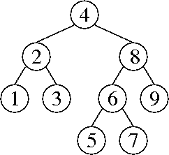
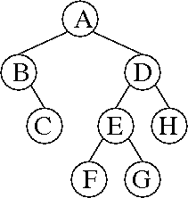
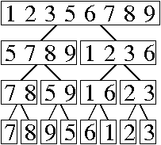

Problem 1. (8 points) A Miscellany.
b. The graph of objects in the heap might be nearly strongly connected—for instance, if almost all of the objects are nodes in a doubly-linked list. Then, half the roots might lead to all the objects, so garbage collection will be no faster than usual.
The solution doesn't work because the sweep phase doesn't know which objects to sweep away if only some of the live objects are marked live.
c. insert() may cause the array to run out of space, forcing you to resize it.
d. The maze graph is a spanning tree of G.
e. If the team that implemented the graph ADT thinks of a better way to implement the graph, they might change the VertexPair class, thereby breaking the Kruskal application.
Problem 2. (9 points) Trees.
a. 
b. No sequence of operations can construct this 2-3-4 tree. In a valid 2-3-4 tree, every leaf is at the same level.
c. 
d. Each node in the splay tree stores both a date and an exam score. The insert method works as usual for a splay tree, using the dates as the keys by which the nodes are ordered.
At each node in the tree, we store the size of the subtree rooted at that node and the sum of the scores of all the exams in the subtree rooted at that node. During each splay tree rotation, we update the subtree sizes as described in class, and we update the subtree total scores analogously: the total score rooted at a node is the sum of its score and its children's subtrees' total scores.
To answer an average query, we determine the number of exams taken between date1 and date2 (inclusive) as described in class. Analogously, we also determine the sum of the scores of those exams. Then we divide the total score by the number of exams.
Some details (not required for full marks, as they repeat what was said in class): The root node knows the size of the tree (number of exams stored in the tree) and the total score of all the exams stored in the tree. We query the number of exams in a range, and the total score in a range, by subtracting the exams outside that range. First we find(date1), thereby splaying date1 or (if date1 is not in the tree) a nearby date to the root. Then we determine how many exams in the tree occurred before date1, and their total score, by subtracting out the exams in the root's left subtree and possibly in the root itself (depending on its date). Then we find(date2) and subtract out the exams that occurred after date2.
Problem 3. (8 points) Sorting.
a.
7 8 9 5 6 1 2 3 4
7 4 9 5 6 1 2 3 8
7 4 3 5 6 1 2 9 8
7 4 3 5 6 1 2 8 9
7 2 3 5 6 1 4 8 9
1 2 3 5 6 7 4 8 9
1 2 3 4 6 7 5 8 9
1 3 2 4 6 7 5 8 9
1 2 3 4 6 7 5 8 9
1 2 3 4 6 5 7 8 9
1 2 3 4 5 6 7 8 9
b. 
c. (iv) and (ii).
d.
110 ab7 a17 117 a07 307 17 d a07 307 d 110 a17 117 17 ab7 d 17 110 117 307 a07 a17 ab7
e. Use a bucket sort that inspects only the first ⌈log n⌉-bit digit of each key, and therefore uses 2⌈log n⌉ buckets (which is at least n and less than 2n). To avoid the cost of copying long integers, we sort LongInteger references instead of moving the integers themselves. When a collision occurs—that is, when you insert a key into a bucket that isn't empty—use insertion sort to enter the key in its proper sorted position in the chain (linked list). In other words, we enforce the invariant that each bucket's chain is always in sorted order. The insertion sort uses comparisons, but we rarely have to compare two keys in their entirety; rather, we go from the most to the least significant digit, and stop as soon as we find a digit where the two keys differ.
After placing every key in a bucket, concatenate the chains together into a sorted linked list.
(Warning: some students wanted to recursively sort the keys in each bucket with further rounds of bucket sort. But this is too expensive if you use the same radix for every round of bucket sort! Because you're always using Θ(n) buckets, even just to sort two keys, the total expected running time will be in Θ(n2). Recursive bucket sorting can work, but only by reducing the number of buckets in each recursive call to be roughly equal to the number of keys.)
This algorithm needs two randomized analyses. First, what is the cost of comparing two keys (for insertion sort)? It takes O(1) time to compare their second-most significant digits. These will match with probability at most 1 / n, in which case we must compare their third-most significant digits. The second and third digits will match with probability at most 1 / n2. Continuing this logic, the expected time to compare two keys is in O(1 + 1 / n + 1 / n2 + 1 / n3 + …) = O(1).
The second part of the randomized analysis is virtually the same as for hash tables. Suppose you insert a key k into a bucket, when there are m keys already in the buckets. Let Vi be a random variable that is 1 if the ith key is in the same bucket as k, and 0 otherwise. Because the expected cost of comparing k with another key is constant, by the linearity of expectation, the expected cost of bucketing k is in
O(1 + V1 + V2 + … + Vm).Because the keys are random, every Vi = 1 / 2⌈log n⌉ ≤ 1 / n. So the expected cost of bucketing k is in
O(1 + m / n) = O(1).By the linearity of expectation, the expected cost of bucketing all n long integers is in O(n).
Problem 4. (8 points) Asymptotic Analysis.
a. 20 log2 n ∈ Θ(log2 (n3)), because log2 (n3) = 3 log2 n, which differs from 20 log2 n only by a constant factor.
b. x ∈ Ω(x sin y), because x ≥ x sin y for all positive x. We can't use Θ because sin y can be zero for arbitrarily large values of y.
c. 10n! ∈ O(nn), because n! ≤ nn (which is obvious if you write out all their factors). We can't use Θ because n × n! ≤ nn (also obvious if you write out their factors and ignore the factor of 1 in the first product). Therefore, as n approaches infinity, the ratio nn / n! also approaches infinity, and no constant can make up for that.
d. n3n ∈ O(3n + log2 n), because 3n + log2 n = nlog2 3 3n, which grows faster than n3n by a factor of approximately n0.58496. No constant can make up for that.
e. f(n) = 2n is one of many counterexamples. (Observe that polynomials don't work; you need something faster-growing.)
By definition, 2cn ∈ Θ(2n) if and only if there exist constants a, b, and N such that for all n > N, 2cn ≤ a2n and 2cn ≥ b2n.
The first of these implies that 2(c – 1)n ≤ a, which is clearly not true for large n if c > 1. (Likewise, the second of these implies that 2(c – 1)n ≥ b, which is clearly not true for large n if c < 1.)
Problem 5. (4 points) Set Intersection.
a. For each item in T, check if it's in S by binary search. Write the common items to an output array. The worst-case running time is in O(t log s).
b. For each item in the smaller set, check if it's in the larger set by hashing. Insert the common items into a new hash table. The expected running time is in O(min{s, t}).
c. Store the elements of both S and T in the same hash table. Each listnode in each chain must contain not only an element, but also a flag specifying whether the element is in S or T (or both, if you feel like merging their listnodes—it will work whether you do so or not).
Also store a doubly-linked list containing the members of S ∩ T. This list must be maintained by the insert and remove methods, because there won't be time to construct it when an application asks for S ∩ T. When an element is inserted into one of the sets, we must check whether it is in the other set; if so, add it to the doubly-linked list. When an element is removed from one of the sets, likewise check whether it is in the other set; if so, remove it from the doubly-linked list. To do that, we have to find its listnode in the doubly-linked list in O(1) time. Therefore, we must maintain an additional reference from each chain listnode to the corresponding doubly-linked listnode (which is null for elements not in S ∩ T).
Now, we can query S ∩ T in O(|S ∩ T| + 1) time by simply traversing the doubly-linked list.
(A good alternative solution uses a third hash table, rather than a linked list, to store the intersection. It's a little more complicated and slow than a linked list, but you don't need to keep listnode references in the chains of the first two hash tables, so in some ways it's more elegant.)
Problem 6. (6 points) Amortized Analysis of a Graph Algorithm.
a. mystery(i) deletes all the edges in the connected component that contains vertex i. Said differently, it deletes all the edges reachable from vertex i. Said differently again, it deletes all the edges on paths that contain vertex i.
b. Θ(e).
c. Every addEdge operation saves $9 in the bank. A call to mystery runs in time proportional to the number of edges it deletes—no more than $9 per edge, since we choose the size of a dollar—plus some constant number of dollars. Say that the amortized cost of mystery() is that constant.
With this accounting, it follows by induction that the bank balance is always at least $9 times the number of (undirected) edges in the graph. That is, if this invariant holds before a call to addEdge or mystery, it will hold after the call; therefore it will hold after any number of operations.
Problem 7. (7 points) Treenode-and-Reference Disjoint Sets.
public DSElement find() {
if (parent == null) {
return this;
}
parent = parent.find();
return parent;
}
public void union(DSElement other) {
DSElement thisRoot = this.find();
DSElement otherRoot = other.find();
if (thisRoot != otherRoot) {
if (thisRoot.size > otherRoot.size) {
otherRoot.parent = thisRoot;
thisRoot.size += otherRoot.size;
} else {
thisRoot.parent = otherRoot;
otherRoot.size += thisRoot.size;
}
}
}